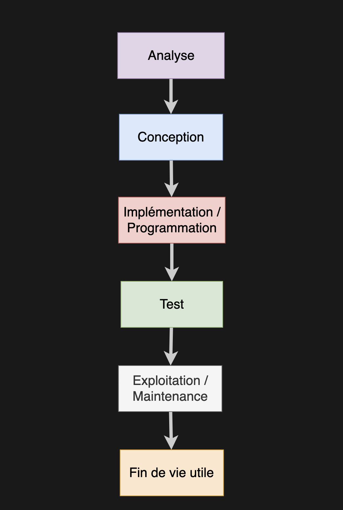

Processus, analyse et modélisation
Eric Demers, Michel Gagnon et Lévis Thériault
« ... transformation de la conception en processus faciles à communiquer, à réviser, à implémenter et à faire évoluer, voilà ce qui est au centre de cet ouvrage et que vous allez découvrir. »
Tiré de la préface du livre de Larman
Processus de développement logiciel

Approche en cascade
Approche en cascade
Processus de développement itératif
Processus unifié
Enchaînements d'activités et la relation entre les disciplines et les phases
Analyse
Les différentes techniques proposées pour récolter les requis du système